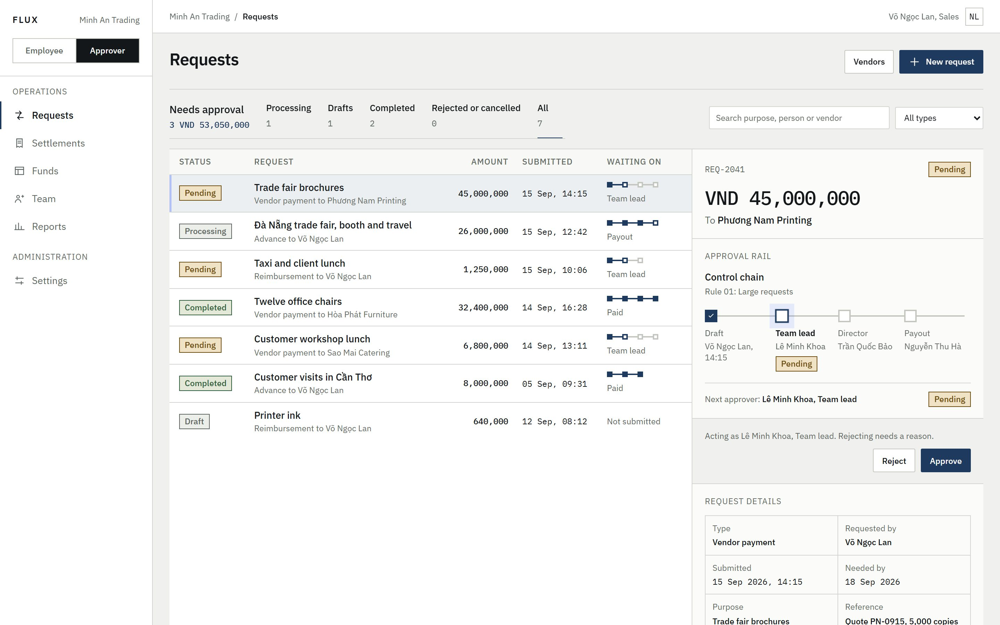
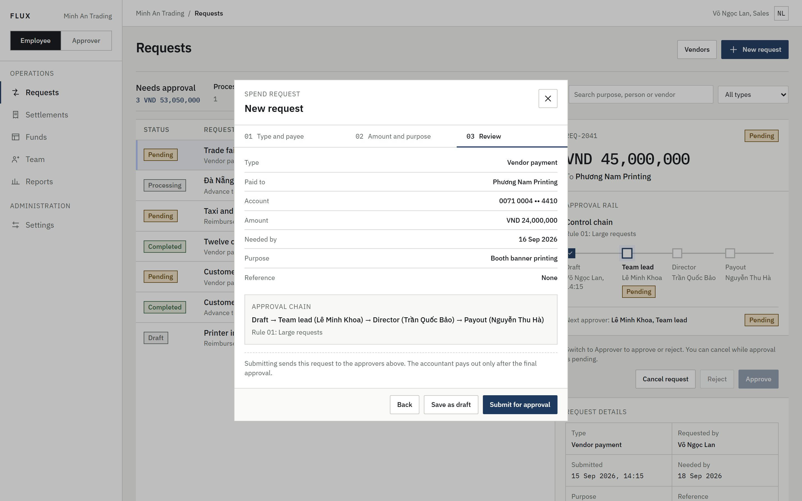
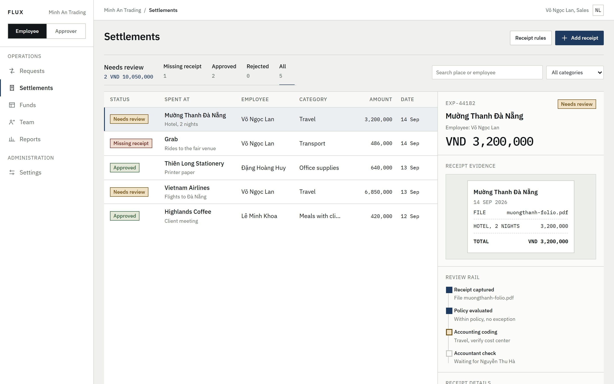
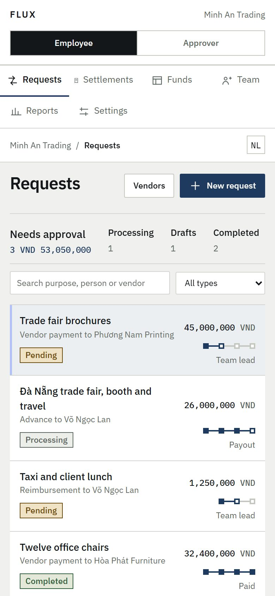

SPEND REQUESTS / APPROVALS / SME / AUDITABILITY
Flux
A spend-request tool for a small company that keeps who approves next, and why, in view from request to payout.

Keep the approval chain visible from request to payout.
In a small company, an employee who needs money for a trip or a supplier usually asks in a chat, then waits. The approver decides from a message without the rule or the amount history, and an advance can stay open for weeks because nobody owns the receipts. This framing is my working hypothesis from how such teams commonly operate; I have not interviewed users for it yet.
Flux follows Minh An Trading, a fictional 40-person company in Hồ Chí Minh City: Lan in Sales asks, Khoa her team lead approves, the director approves anything above VND 20,000,000, and Hà the accountant checks new vendors and receipts and pays out. I owned the product design and the working prototype: rules, approval flow, states, and the redesign of every screen.
Make the next step obvious.
-
Put the decision above the data
The request detail now reads amount, approval rail, decision, then the request data. In the first version the rail and the Approve button sat below the fold at 1440 × 900, under a block of payment fields; now the rail starts at 444 px and Approve at 661 px. A counted Needs approval tab with the VND value waiting replaced a strip of four metric boxes that repeated the filters.
-
Ask the type first
A request starts with its type. An advance or a reimbursement is paid to the person asking, so the vendor picker disappears; a vendor payment asks for the vendor. The form names the rule that applies as soon as an amount is typed, and the review step shows the full chain with names.

The chain before submit. The person asking sees who will approve and who pays out before the request leaves their hands. -
Readable rules over a visual node editor
Rules stay explicit IF/THEN lines (amount, request type, vendor age), run top to bottom, and can be edited, exported and traced in a change history.
-
Close the loop on advances
An advance is not done when it is paid. Settlements list the receipts that settle it, flag a missing receipt, and let the accountant approve or reject each one with a reason.

Receipts against an advance. Each receipt says which advance it settles; a missing one is a state, not a footnote.

I moved the product to a setting people know.
The first version of Flux was a cross-border treasury console for a holding group: five currencies, FX cost, SWIFT and company cards. It was hard to judge for anyone outside treasury, including me, and I could not test it with people I can reach. In November 2026 I moved the content to advances and reimbursements in a small Vietnamese company.
Kept: the approval mechanics, the rule builder, the Approval Rail and the visual system. Removed: multi-currency, FX and the Cards screen. Cost: new seed data, new rules, and rewriting the browser tests for every flow; the 17 flow tests pass on the new content.
What is real, and what is not tested yet.
Real: a working prototype of requests, rules, approvals, payouts, receipts, funds, team roles and reports, with 17 browser flow tests. Not real: a backend, bank connections or payroll. The company, people and amounts are fictional, and no employee, team lead or accountant has tested it yet.
The first test should ask office staff and accountants to say who approves a request next and why, and to settle an advance that is missing a receipt.
Evidence details and validation plan
Supporting source audit and planned validation. The audit records an earlier source review; this narrative edit adds no user research, measured outcomes or team claims.
Decision snapshot
Detailed project context, decisions and evidence limits.
Product Designer
Independent project; no separate PM, engineering or stakeholder team is documented in this public case.
3 documented directions/choices: Visual node-editor policy builder / Restricted accent color / Role + permission pressure
Restricted accent color — Navy and semantic statuses carry meaning without making every surface compete for attention.
Explicit trade-off section: Operational clarity beats consumer-fintech decoration
Implementation reality: Independent concept + working prototype. No verified engineering-collaboration record is present in this public case.
Local component, state or system implications are documented in the case; downstream production impact is not measured.
Project pivot: the first treasury version was too far from users I can reach to test; the content moved to SME spend requests while the approval model and visual system stayed.
PLANNED / NOT MEASURED. Baseline: Needs a first test with office staff and accountants.
Run the first benchmark against the predefined A26 target; if the threshold is missed, revise the selected model before adding more polish or scope.
Evidence summary
Targets for the first test
≥ 4/5 participants correctly say who approves a request next and why, and settle an advance that is missing a receipt. This is a decision threshold for future validation, not a measured outcome.